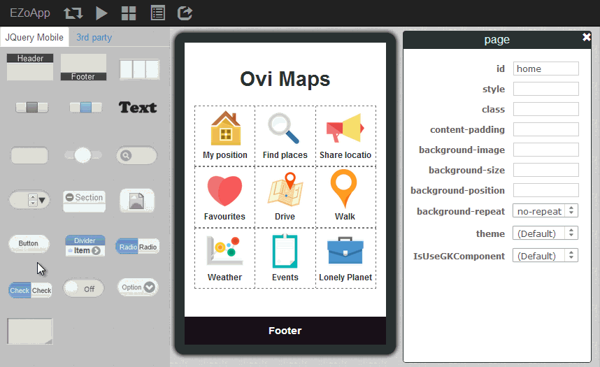

講到開發一支 app，排版往往是令開發者最頭痛的環節之一，甚至有時候會耗費超過了一半的開發時間在調整版面，俗話說的好，「魔鬼往往藏在細節裡」，看似很簡單的排版，卻往往會造成工程師大大的困擾。因此 EZoApp 提供了所見即所得的設計工具，只需要利用拖拉以及調整數字的方式，搭配大家熟悉的簡易 CSS 語法，就能夠輕鬆做出各式各樣的版面，而開發者更能夠將心力投入在其他的設計細節上。
這裡開始的 EZoApp 教學實作，將由簡單的排版開始介紹，相信只要有心！人人都可以成為排版大師的！
範例連結：
基本元件實作 - grid 基礎排版
大家可以點選連結開啟 EZoApp 的 grid 排版範例，一面閱讀一面進行操作，相信對於 EZoApp 的使用，能夠更快上手喔！

首先我們要放上文字，放上文字的方法很簡單，只需要用拖拉的方式將左側 gk-text 元件拖拉至畫面編輯區域當中，就能夠快速產生一個文字區塊，接著只需要改變文字以及用css將文字對齊就好囉！
<h1 is="gk-text" style="text-align:center;">Ovi Maps</h1>

相當快速的處理好文字之後，我們要來放上 gird 的元件，同樣以拖拉的方式把左側 grid 元件拖拉到編輯區域，就可以產生一個預設為三個欄位的 grid，如果我們要設定一個九宮格的 gird，只需要輕鬆拖拉三次即可完成，每個 gird 拖進去編輯區域後，都會產生下列對應的 html 程式碼，class="ui-grid-b" 是 JQueryMobile 的預設格式，代表這是三個欄位的 grid。
<div class="ui-grid-b" style="height:95px;">
<div class="ui-block-a" style="height:100%;"></div>
<div class="ui-block-b" style="height:100%;"></div>
<div class="ui-block-c" style="height:100%;"></div>
</div>

有了 grid 之後，我們只要在對應的欄位內，利用 3rd-party 元件的 image ，就能夠輕鬆的放上圖片元件，或是直接輸入圖片的 html 語法，也可以輕鬆加入圖片，這裡列出加入圖片的程式碼提供大家參考。
附帶說明一點，如果是自己加入的程式碼，可以在圖片的標籤內，加上 is="dragable" ，就能夠讓這張圖片轉換為 EZoApp 的圖片可拖拉元件，是不是相當的方便呢！
<div class="ui-grid-b" style="height:95px">
<div class="ui-block-a" style="height:100%">
<img is="dragable" src="圖片網址"/>
<h5 is="gk-text" style="text-align:center;">標題</h5>
</div> <div class="ui-block-b" style="height:100%">
<img is="dragable" src="圖片網址"/>
<h5 is="gk-text" style="text-align:center;">標題</h5>
</div>
<div class="ui-block-c" style="height:100%">
<img is="dragable" src="圖片網址"/>
<h5 is="gk-text" style="text-align:center;">標題</h5>
</div>
</div>
當我們把圖片都一一放上之後，接著我們要製作一個 footer，製作 footer 的方法也相當簡單，只需要拖拉 footer 元件進入編輯區域，接著在 footer 的屬性面版上改變 footer 的樣式，就能夠輕鬆做出一個黑底樣式的 footer。

最後我們仍然利用拖拉的方式，拖拉 button 元件放到編輯區域的 footer 上方，就可以在 footer 的左右兩邊建立按鈕，然後同樣的由屬性面板更換按鈕的 icon 與文字，就能夠很快速的做出一個帶有按鈕的 footer 囉！
當然，除了可以由屬性面板調整按鈕的屬性，因為按鈕的元件也是建構在 JQueryMobile 的基礎元件之一，我們可以藉由下列的程式碼，更改按鈕的樣式，讓整體更具有設計感。
<div data-role="footer" data-position="fixed" data-theme="b">
<h3>InfoChamp</h3>
<a class="ui-btn ui-btn-left ui-btn-icon-left ui-icon-gear ui-btn-icon-notext ui-corner-all" style="margin-top:0;"></a>
<a class="ui-btn ui-btn-right ui-btn-icon-left ui-icon-delete ui-btn-icon-notext ui-corner-all" style="margin-top:0;"></a>
</div>
